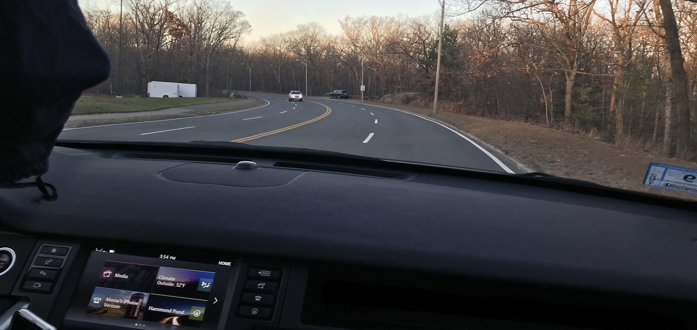
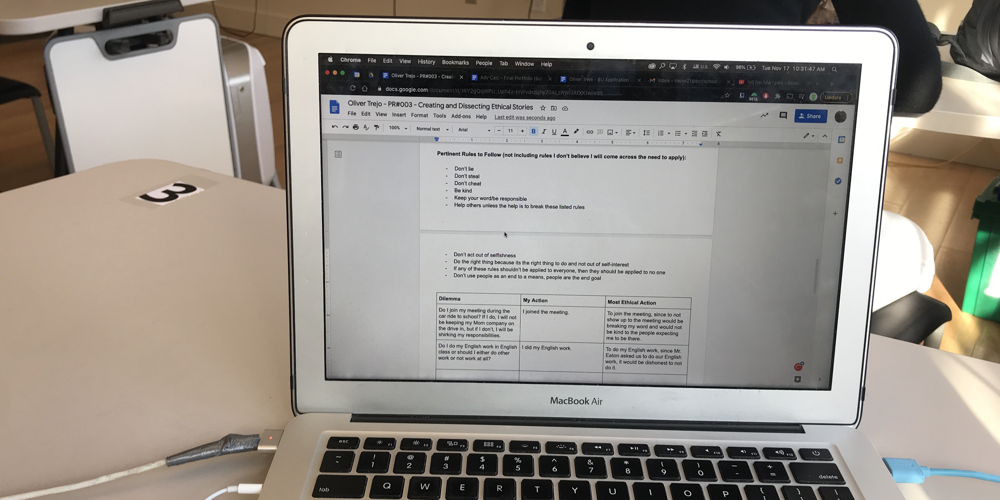
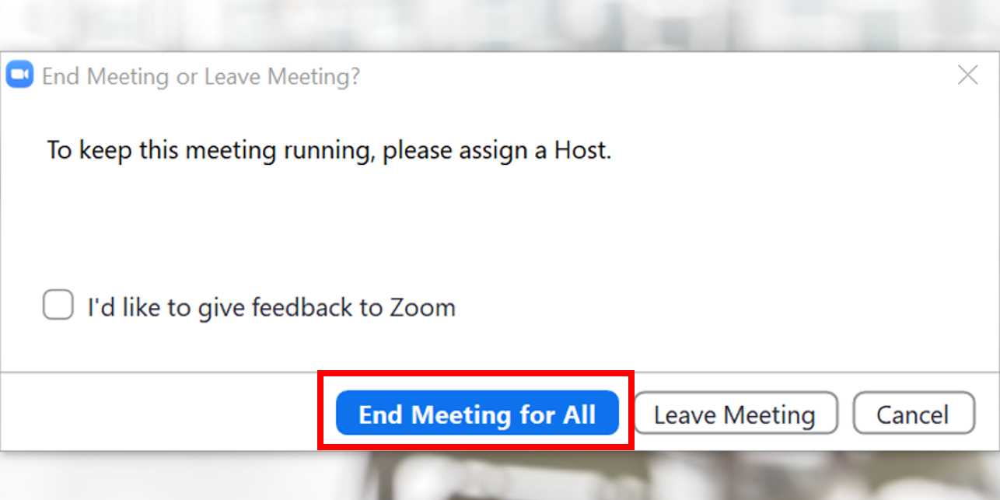
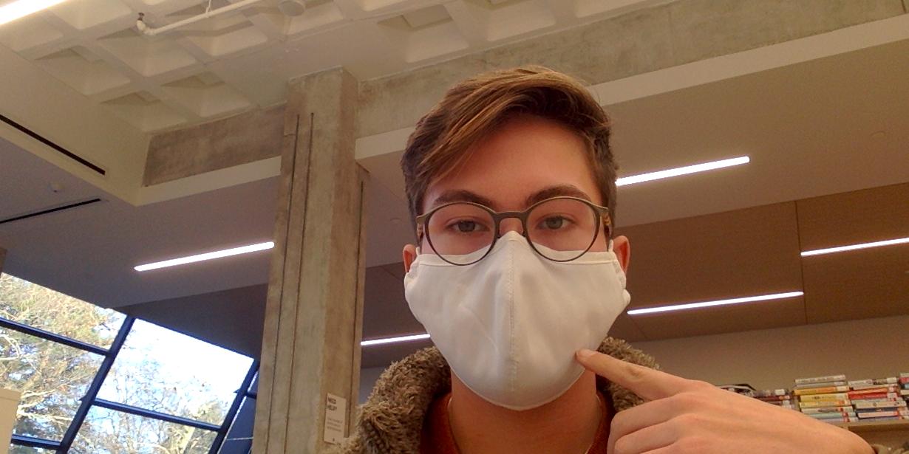
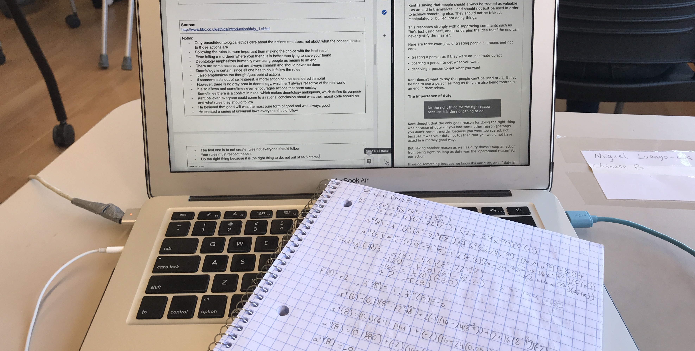
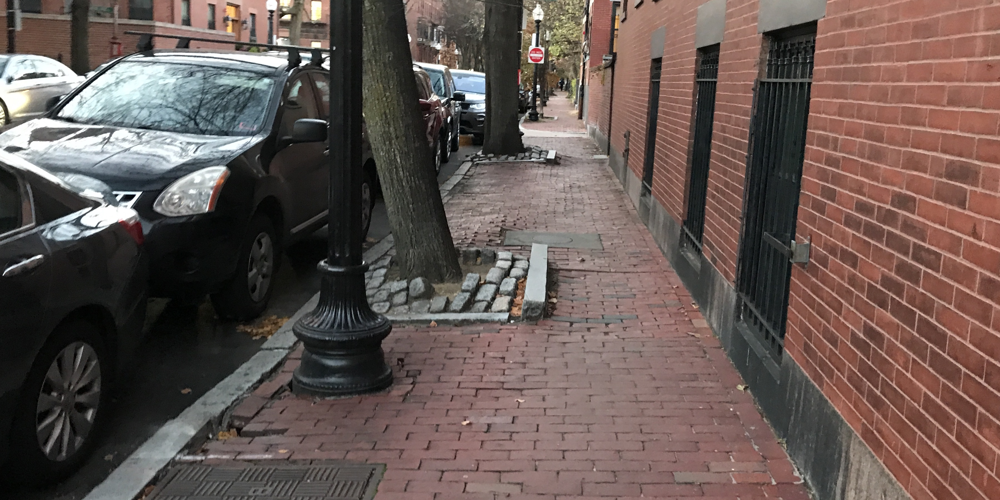

By Oliver Trejo
Deontology is a form of ethics based around following rules. Whether or not the consequences of an action have a positive or negative effect on the world or others is irrelevant, the only determinant of whether or not an action is moral is whether or not it follows deontological rules. Some positives of deontology is that it can be very certain. If someone is struggling with an ethical dilemma, all they have to do is follow the rules. Even though some rules can sometimes contradict, this isn’t always the case. Consequentialism/utilitarianism are often considered to be the opposite of deontology, where they are completely focused on the best outcome for each decision you make. A con of deontology is that it often fails to see the nuance in situations, as well as causing harm to others/society, since it doesn’t care at all about the consequences. I followed a series of rules derived from Immanuel Kant’s (a major proponent of deontology) Categorical Imperatives (Universal Laws), which you can read below.
• Don’t lie
• Don’t steal
• Don’t cheat
• Be kind
• Keep your word/be responsible
• Don’t put others in harm’s way
• Help others unless the help is to break these listed rules
• Don’t act out of selfishness
• Do the right thing because its the right thing to do and not out of self-interest
• If any of these rules shouldn’t be applied to everyone, then they should be applied to no one
• Don’t use people as an end to a means, people are the end goal
Dilemma: Should I complete the daily health form Beaver asks me to do everyday? It could be easier for me to just skip it.
My Solution & Analysis: I completed the health form. Completing the health form is the deontologically ethical decision, since to not fill it out or to rush through it without paying attention would be dishonest and could put others in harms way.
Dilemma: Do I join my meeting during the car ride to school? If I do, I will not be keeping my Mom company on the drive in, but if I don’t, I will be shirking my responsibilities.
My Solution & Analysis: I joined the meeting. Under my deontological rules, I should have joined it, since to not show up to the meeting would be breaking my word and would not be kind to the people expecting me to be there.
Dilemma: Do I do my English work in English class? I could either do other work or not work at all? Mr. Eaton did ask us to work on our projects, but I could not listen to him.
My Solution & Analysis: I did my English work. To do my English work would be the most deontologically ethical decision. Since Mr. Eaton asked us to do our English work, it would be dishonest to not do it and would be acting out of self-interest.
Dilemma: Do I leave the Zoom meeting if there’s no time left so I can go do my work or do I stay on, even if it means I can’t do my homework?
My Solution & Analysis: I left the meeting. To stay in the meeting. Leaving the meeting wouldn’t be ethical since my reasoning is in self-interest. Ending the meeting would be putting my wants above the other people’s wants.
Dilemma: Should I always have my mask on when inside? I could just take it off, especially when over 6 feet away from others since its not comfortable.
My Solution & Analysis: I kept my mask on. Keeping my mask on is the correct decision according to my rules, since taking it off inside at all could harm others, isn’t keeping my word to the school’s COVID honor code, and it would be acting out of self-interest.
Dilemma: When working in math class, should I work on the math homework I have for Thursday or should I work on the homework due tomorrow?
My Solution & Analysis: I worked on tomorrow’s homework. Working on my math homework would be the ethical choice, since, like the earlier English class, I was asked to work on math. I acted out of self-interest since I prioritized my own work.
Dilemma: When walking my dog, should I pick up after him when he poops? It’s kind of gross and there’s no one around, so no one would know I left the poop.
My Solution & Analysis: I cleaned up after my dog. Leaving the poop is not ethical according to deontology since it would be acting out of self-interest. Cleaning up after my dog is also being kind, since it’s not making my neighborhood dirtier.
Conclusion:
In conclusion, following deontology was difficult, mostly due to the inability to focus on the consequences of my actions. In each moral choice, I had to consider the rules I made and wonder if any of my choices would contradict any rule. I also wonder whether or not any of my deontological actions would be considered moral, since the reason I was following deontology for a day was for this project, which could be considered acting in self-interest, which directly breaks one of the rules I had set for myself. Deontology, while idealistic, is not very realistic to follow, since it can have you go against the greater good to act “morally perfect” while also not considering any of the consequences of your actions, which is not necessarily a good thing.
Code:
Here's the link to the GitHub page with the code and files for this website: